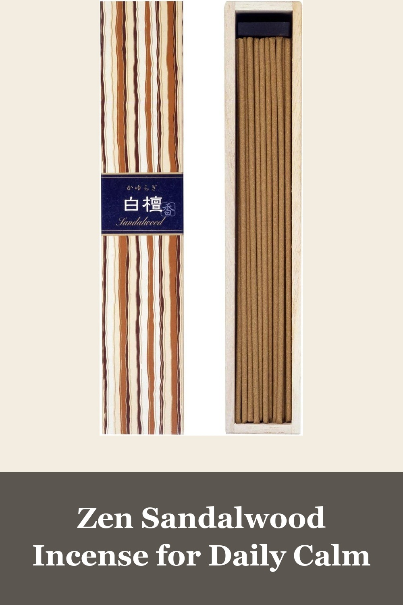
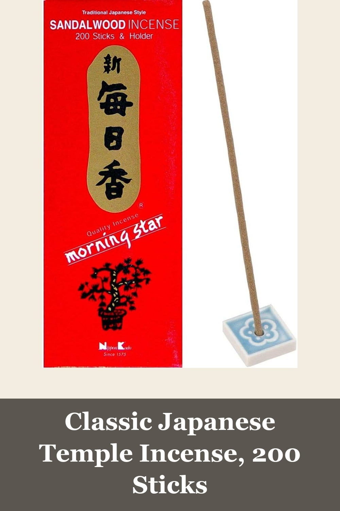
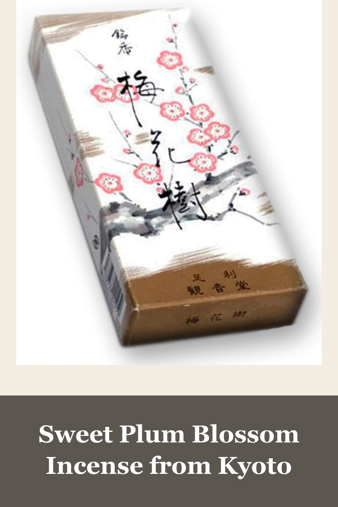

nippon kodo Kayuragi Incense Sticks - Sandalwood, 40 Sticks
Coreless Japanese incense with over 5,200 Amazon reviews — no wooden stick inside means a cleaner burn and a lighter, purer sandalwood scent. Comes in a beautiful gift-ready box with a mini ceramic holder.
Very high-quality incense. My most favorite. Very well-made. Each stick lasts about 30 minutes. It doesn't smell or feel toxic like other brands.— verified Amazon buyer
View on Amazon →
Sandalwood Incense 200 Sticks - Morning Star (Nippon Kodo)
A Japanese incense staple since 1575 — over 3,100 reviews and Amazon's Choice. 200 sticks and a ceramic holder included, perfect for daily meditation or simply scenting a room.
Smells terrific, sweet, pleasant not overpowering, doesn't smoke too much... love this one, repeat purchaser for years now. Great for my morning meditation.— verified Amazon buyer
View on Amazon →
SHOYEIDO Plum Blossoms Incense, 150 Sticks - Baika-ju
A beautifully packaged Kyoto incense with a sweet, gentle plum-blossom fragrance — Amazon's Choice with 4,700+ reviews. A lovely gift box as much as a fragrance.
Beautiful incense! It's great for a calming evening and burning throughout the day... The scent is sweet vanilla cinnamon like with the soft smoky wood notes of the incense.— verified Amazon buyer
View on Amazon →